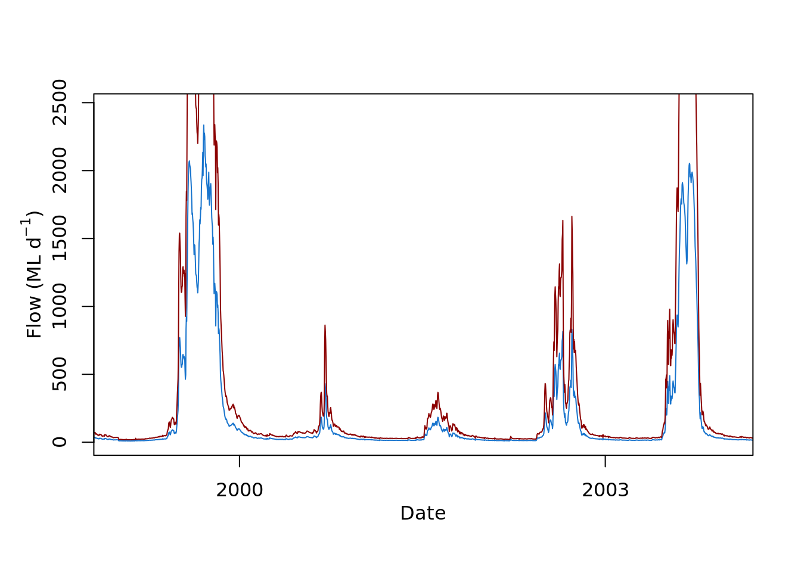
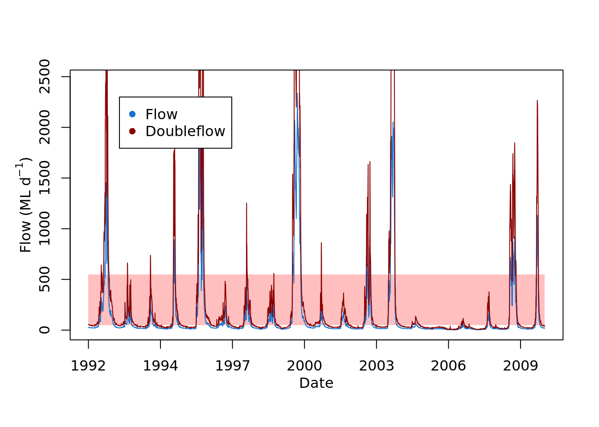

Learning the Tidyverse2
Visualising Module 1 Flow Data
Setting up
Creating an R Studio project
- Open R Studio
- Go File -> New Project -> New Directory -> New Project
- Directory name: ENVT3362_workshop_2
- Create project as a subdirectory of: Wherever you store your ENVT3362 files!
- Click Create project
- Download the spreadsheet for this workshop here
- Move this to your ENVT3362_workshop_2 directory
Importing and formatting the data
Load the necessary packages
library(tidyverse)loads all the ‘core’ tidyverse packages- readxl and lubridate need to be loaded separately
Import the spreadsheet
- The
pathargument is relative to you R Studio project file sheetspecifies which Excel sheet to read
Inspect the data
head()prints the first few observations- What data type is
date?
## # A tibble: 6 × 2
## date totalDischarge
## <chr> <dbl>
## 1 1992-01-01 26.6
## 2 1992-01-02 26.8
## 3 1992-01-03 27.3
## 4 1992-01-04 27.0
## 5 1992-01-05 26.5
## 6 1992-01-06 26.8Graphing with ggplot

Define the data and mapping
- The aesthetics (
aes()) provide the mapping between variables in the data and the plot’s visual properties


Change the geometry
- As long as the aesthetics can be mapped to the declared geometry type, ggplot will render the graph

Change the colour
- Colours can either be hexadecimal codes (e.g.
"#0000FF"is blue) or one of R’s reserved colour names
ggplot(data = envFlow, mapping = aes(x = date, y = totalDischarge)) +
geom_line(colour = "dodgerblue3") 
Fix the labels
ggplot(data = envFlow, mapping = aes(x = date, y = totalDischarge)) +
geom_line(colour = "dodgerblue3") +
labs(x = "Date", y = "Total Discharge (ML)")
Change the theme
ggplot(data = envFlow, mapping = aes(x = date, y = totalDischarge)) +
geom_line(colour = "dodgerblue3") +
labs(x = "Date", y = "Total Discharge (ML)") +
theme_light()

Visualising Diversion Scenarios
Let’s pretend our graph will be used in a report that assesses the impact of the proposed diversion scenarios. We need to visually communicate to the reader the upper and lower limits of flows that can be diverted. To do this, let’s highlight the region of the graph where environmental flows can occur under Diversion Scenario 1 (i.e. Water below 50 ML/day and above 550 ML/day is not diverted).
Map the current aesthetics to geom_line()
aes()can be passed to eitherggplot()or a specificgeom_- Aesthetics supplied to
ggplot()are used as defaults for every layer
ggplot() +
geom_line(data = envFlow, mapping = aes(x = date, y = totalDischarge), colour = "dodgerblue3") +
labs(x = "Date", y = "Total Discharge (ML)") +
theme_light() +
theme(
axis.title = element_text(face = "bold"),
axis.text = element_text(colour = "black")
)
Add a second geometry
geom_rect()has two dimensions and therefore reques different aesthetic mappings
ggplot() +
geom_line(data = envFlow, mapping = aes(x = date, y = totalDischarge), colour = "dodgerblue3") +
geom_rect(mapping = aes(xmin=min(envFlow$date),xmax=max(envFlow$date), ymin=50, ymax=550))+
labs(x = "Date", y = "Total Discharge (ML)") +
theme_light() +
theme(
axis.title = element_text(face = "bold"),
axis.text = element_text(colour = "black")
)
Customise the geometry
ggplot() +
geom_line(data = envFlow, mapping = aes(x = date, y = totalDischarge), colour = "dodgerblue3") +
geom_rect(
mapping = aes(xmin=min(envFlow$date),xmax=max(envFlow$date), ymin=50, ymax=550),
alpha = 0.25
)+
labs(x = "Date", y = "Total Discharge (ML)") +
theme_light() +
theme(
axis.title = element_text(face = "bold"),
axis.text = element_text(colour = "black")
)
Add a legend
- By specifying
fillinside the aesthetics, ggplot maps this information to the geom’s fill (i.e. the colour fill) - Usually a grouping variable from the data would be provided here i.e. a column that classifies your data into different groups
ggplot() +
geom_line(data = envFlow, mapping = aes(x = date, y = totalDischarge), colour = "dodgerblue3") +
geom_rect(
mapping = aes(xmin=min(envFlow$date),xmax=max(envFlow$date), ymin=50, ymax=550, fill = "Diversion Scenario 1"),
alpha = 0.25
)+
labs(x = "Date", y = "Total Discharge (ML)") +
theme_light() +
theme(
axis.title = element_text(face = "bold"),
axis.text = element_text(colour = "black")
)
Customise the legend
- ggplot automatically assigns the colours, change this with
scale_fill_manual()
ggplot() +
geom_line(data = envFlow, mapping = aes(x = date, y = totalDischarge), colour = "dodgerblue3") +
geom_rect(
mapping = aes(xmin=min(envFlow$date),xmax=max(envFlow$date), ymin=50, ymax=550, fill = "Diversion Scenario 1"),
alpha = 0.25
)+
scale_fill_manual(values = "red")+
labs(x = "Date", y = "Total Discharge (ML)") +
theme_light() +
theme(
axis.title = element_text(face = "bold"),
axis.text = element_text(colour = "black"),
legend.title = element_blank()
)
Move the legend
ggplot() +
geom_line(data = envFlow, mapping = aes(x = date, y = totalDischarge), colour = "dodgerblue3") +
geom_rect(
mapping = aes(xmin=min(envFlow$date),xmax=max(envFlow$date), ymin=50, ymax=550, fill = "Diversion Scenario 1"),
alpha = 0.25
)+
scale_fill_manual(values = "red")+
labs(x = "Date", y = "Total Discharge (ML)") +
theme_light() +
theme(
axis.title = element_text(face = "bold"),
axis.text = element_text(colour = "black"),
legend.title = element_blank(),
legend.position = "top",
legend.justification = "right"
)
Barcharts and Pipes
Use pipes and mutate() to reformat the date
- The pipe (
%>%) operator takes the output from one function and makes it the input of the next - Pipes can be used across the tidyverse when working with tidy data
mutate()is used to add or remove variables when working with pipes- This is the same as
envFlow$date <- ymd(envFlow$date)but it’s ‘pipeable’!
## # A tibble: 6,940 × 2
## date totalDischarge
## <date> <dbl>
## 1 1992-01-01 26.6
## 2 1992-01-02 26.8
## 3 1992-01-03 27.3
## 4 1992-01-04 27.0
## 5 1992-01-05 26.5
## 6 1992-01-06 26.8
## 7 1992-01-07 27.1
## 8 1992-01-08 26.8
## 9 1992-01-09 26.7
## 10 1992-01-10 26.0
## # … with 6,930 more rows
## # ℹ Use `print(n = ...)` to see more rowsExtract the years
year()returns the numerical year from date formatted data
## # A tibble: 6,940 × 3
## date totalDischarge year
## <date> <dbl> <dbl>
## 1 1992-01-01 26.6 1992
## 2 1992-01-02 26.8 1992
## 3 1992-01-03 27.3 1992
## 4 1992-01-04 27.0 1992
## 5 1992-01-05 26.5 1992
## 6 1992-01-06 26.8 1992
## 7 1992-01-07 27.1 1992
## 8 1992-01-08 26.8 1992
## 9 1992-01-09 26.7 1992
## 10 1992-01-10 26.0 1992
## # … with 6,930 more rows
## # ℹ Use `print(n = ...)` to see more rowsPipes are non-destructive
- Notice how
envFlowis unchanged? This is useful when performing ‘data exploration’ as the original dataframe never altered
## # A tibble: 6 × 2
## date totalDischarge
## <chr> <dbl>
## 1 1992-01-01 26.6
## 2 1992-01-02 26.8
## 3 1992-01-03 27.3
## 4 1992-01-04 27.0
## 5 1992-01-05 26.5
## 6 1992-01-06 26.8Group and summarise
- Group the data by new
yearcolumn and calculate summary statistics withsummarise()
envFlow %>%
mutate(date = ymd(date)) %>%
mutate(year = year(date)) %>%
group_by(year) %>%
summarise(totalDischarge = sum(totalDischarge))## # A tibble: 19 × 2
## year totalDischarge
## <dbl> <dbl>
## 1 1992 89538.
## 2 1993 21042.
## 3 1994 16511.
## 4 1995 31838.
## 5 1996 128586.
## 6 1997 18061.
## 7 1998 23067.
## 8 1999 19090.
## 9 2000 189366.
## 10 2001 17462.
## 11 2002 13946.
## 12 2003 39874.
## 13 2004 124288.
## 14 2005 8567.
## 15 2006 4182.
## 16 2007 5221.
## 17 2008 8418.
## 18 2009 62334.
## 19 2010 33940.Plot using geom_col()
- Pipe this into
ggplot() - Note that we don’t need to specify the
dataargument toggplot()
envFlow %>%
mutate(date = ymd(date)) %>%
mutate(year = year(date)) %>%
group_by(year) %>%
summarise(totalDischarge = sum(totalDischarge)) %>%
ggplot(mapping = aes(x = year, y = totalDischarge)) +
geom_col(fill = "dodgerblue3") 
Apply the previous theme
envFlow %>%
mutate(date = ymd(date)) %>%
mutate(year = year(date)) %>%
group_by(year) %>%
summarise(totalDischarge = sum(totalDischarge)) %>%
ggplot(mapping = aes(x = year, y = totalDischarge)) +
geom_col(fill = "dodgerblue3") +
labs(x="Year", y = 'Total Discharge (ML)')+
theme_light() +
theme(
axis.title = element_text(face = "bold"),
axis.text = element_text(colour = "black")
)
Recap
read_xls(path = "envFlowData.xls", sheet = 1) %>%
mutate(date = ymd(date)) %>%
mutate(year = year(date)) %>%
group_by(year) %>%
summarise(totalDischarge = sum(totalDischarge)) %>%
ggplot(mapping = aes(x = year, y = totalDischarge)) +
geom_col(fill = "dodgerblue3") +
labs(x="Year", y = 'Total Discharge (ML)')+
theme_light() +
theme(
axis.title = element_text(face = "bold"),
axis.text = element_text(colour = "black")
)